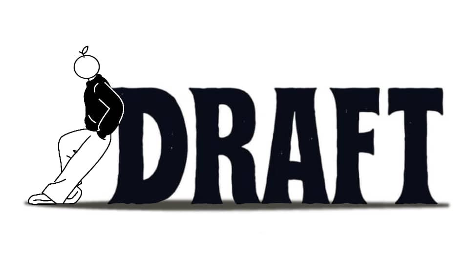

DRAFT: Work in Progress
"Marca la diferencia, no la tendencia."
Ficha del Proyecto Académico
Institución: Instituto Universitario de Tecnología de Administración Industrial (IUTA) - Extensión Valencia, Ampliación San Joaquín.
Carrera / Sección: Publicidad y Mercadeo, Sección Val003 (Profesora: Yasmira Castro).
Equipo de Alumnos: Ashley Machado, Ángel Herrera, Dilmar Barbera, Verónica Reyes y Samuel Páez.
Propósito, Misión y Visión
Propósito: Liberar el potencial creativo de las personas a través de la comodidad de ser uno mismo, dando voz a quienes entienden que el arte real no se logra en el primer intento.
Misión: Diseñar y producir prendas funcionales y sobrias que actúen como un uniforme para el día a día del creador contemporáneo, permitiendo que el protagonismo recaiga en el talento y no en el logotipo.
Visión: Convertirse en el código visual común de la industria creativa a nivel global como una señal de reconocimiento mutuo entre creadores.
Composición Técnica
La nueva composición garantiza durabilidad extrema y confort para el creativo contemporáneo.
El Producto: Colección "Work in Progress"
Composición Técnica: Franela de alto gramaje compuesta por 65% poliéster (actúa como el esqueleto para mantener los hombros caídos y evitar arrugas) y 35% algodón (aporta suavidad, transpirabilidad y frescura para el clima de Valencia).
Clasificación: Bien de Especialidad dentro del streetwear conceptual, estructurado mediante un sistema de tallas por volumen (Fit 1, 2 y 3) con enfoque genderless.
Estrategia y Campaña Publicitaria
Estrategia de Venta (D2C): Venta directa a través de canales digitales optimizados (Instagram Shopping y WhatsApp Business) y distribución itinerante en bazares de diseño y puntos de recogida en la Zona Norte de Valencia (El Viñedo).
El Manifiesto del Borrador (Video Publicitario): Una narrativa visual que muestra a Ángel, Ashley y Dilmar superando sus bloqueos creativos cotidianos al recibir la indumentaria DRAFT, transformando la frustración en inspiración pura antes de unirse como el Draft Crew al atardecer.
¿Quieres impulsar tu marca como lo hicimos con DRAFT?
En NEXA diseñamos estrategias de alto impacto comercial, nos adaptamos a la realidad de tu negocio.
Contáctanos